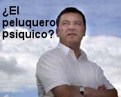

La muerte de Christopher Reeve

Hace dos semanas, un aspirante al premio del millón de dólares de la JREF dijo que como prueba de sus poderes sanaría al actor discapacitado Christopher Reeve. No hace falta decir que ahora eso no tiene importancia; el señor Reeve, héroe del movimiento de investigación con células madre, ha muerto. Pero en enero de 2000, en el Toronto Sun, el psíquico y astrólogo Anthony Carr también predijo, en estas palabras, que Reeve, “se levantaría de su silla y deambularía”.
El lector Dillon Caplinger nos cuenta una incluso mejor:
Escuchando a Howard Stern, escuché a la señora Fran Baskerville (http://www.singingpsychic.com/) llamar al programa para ofrecer sus predicciones cantadas, dos cosas que aparentemente no hace bien. Howard le hizo sus preguntas normales sobre quién ganaría las elecciones, etc. Sin embargo, lo peor fue cuando él le preguntó si Christopher Reeve alguna vez volvería a caminar. Esto fue el lunes siguiente a su muerte. Ella dijo entonces que lo veía caminando sobre sus dos piernas y feliz. Como probablemente sospeche, cuando se le informó que el señor Reeve había muerto, ella no perdió tiempo en decir que tenía razón, él estaba feliz y caminando en el cielo. No hace falta decir que el personal de Stern se rió mucho con esto.
Bueno, a mí no me hace gracia. Reeve fue una persona valiente y solidaria, haciendo campañas personalmente para que se permita y financie la investigación con células madre a fin de que las curas para problemas como el suyo estén más cerca de una solución. Dillon, comprendo que Stern y compañía podrían reírse ante las pretensiones de esta payasa de Baskerville, pero eso debió atenuarse ante el hecho de que Reeve había perdido su batalla por la vida y el progreso.
Dos reseñas desde el Reino Unido
El lector David Patrick nos cuenta de una ridícula serie británica sobre un “peluquero psíquico” que descubrió que las pamplinas dan mejor resultado que cortar el pelo:
Estuve viendo una serie documental en tres partes llamada “Médiums: Hablando con los muertos” en BBC 2 aquí en el Reino Unido.
Es una serie documental muy indignante. A lo largo de las tres partes acompañan a varios “médiums”. Es más una serie sobre la gente que es médium que sobre la investigación de sus afirmaciones, a pesar de la narración introductoria que se preguntaba si realmente se comunican con los muertos o si sólo están haciendo presa en los dolientes y prolongando sus sufrimientos. La serie no es tan mala como la escoria paranormal que infesta muchos de los canales satelitales, pero no hay crítica ni discusión sobre si esto es real o no. Los programas permitieron que los “médiums” y los creyentes hicieran declaraciones espantosas sin cuestionarlas, como por ejemplo “En mi experiencia los escépticos más recalcitrates nunca han hecho una investigación sobre el tema”.
También conocimos a una pareja que viaja de una aparición pública a otra de cualquier médium que se presente en la ciudad esperando ponerse en contacto con su hijo muerto. Está claro que su proceso de duelo está totalmente paralizado y cada vez que intentan ponerse en contacto con él vuelven al comienzo. La única voz de disenso viene del esposo, que es muy escéptico, mientras que la esposa está asistiendo a un curso de cómo convertirse en médium. Intencionalmente o no, el programa hace que este curso luzca absolutamente risible. Varios “médiums” aparecen obteniendo lo que parecen buenos aciertos y otros se ven incapaces de relacionar nada con la audiencia. Me parece que el programa hará que todos piensen lo mismo que pensaban antes. Los creyentes verán confirmada su fe y los realistas (como yo) verán confirmadas sus sospechas.
Estoy planeando escribir a la BBC con mis quejas sobre la naturaleza acrítica del programa. Dudo que vaya tener algún resultado, más que nada porque el programa fue realizado por el departamento religioso de la BBC y por lo tanto nunca iba a haber una investigación seria sobre si es real o no. Como sea, lo intentaré.
Hay una pequeña página web sobre el programa en http://www.bbc.co.uk/religion/programmes/everyman/index.shtml.
Voy a sugerir que hagan un programa con experimentos científicos sobre lo paranormal. Creo que ya va siendo hora de tal programa. BBC 2 fue quien estuvo en parte en una investigación especial sobre la homeopatía que lo presentó a usted mismo haciendo un fantástico trabajo en mostrar que toda esa idea no tenía base.
Y… el lector Sean Jordan informa sobre otro programa de TV del Reino Unido:
“Prueba positiva”
Probablemente este programa sea el peor programa sobre lo “paranormal” que he visto jamás. Afirman usar “ciencia forense” para verificar eventos paranormales, y declaran uno por episodio como “prueba positiva”.
¿Los ganadores hasta ahora? Un “pintor reencarnado”, que ahora es un capitán de policía (da miedo, ¿no?) y un par de “psíquicos” que, aparentemente, pueden realizar lecturas en frío (ajum) y dibujar personas de gente muerta relacionada con una persona.
¿La prueba de esto? Para el fulano que era un pintor reencarnado, lo hicieron pasar una prueba con un detector de mentiras. Así es, un polígrafo. Por supuesto, si él creía que era verdad, incluso un partidario decidido de los polígrafos admitiría que los resultados serían negativos. Pero también es un policía, aparentemente con experiencia. Puede que algunas personas sean mejor que ellos mintiendo, pero no son muchas.
Para estos psíquicos usaron un tamaño muestral de (cuéntenlos, que no se les escape ninguno) cinco, uno de los cuales no regresó. Hablo en serio; esa es su idea de una prueba científica. ¿Y la tasa de éxito? Bien, los sujetos de la lectura en frío la evaluaron, lo que ya es bastante malo, pero sólo la evaluaron en un 66% más o menos. No estoy seguro, creo que es el número que mencionaron. Y dos de los cuatro no pudieron encontrar a nadie que concordara con los dibujos realizados, por más que buscaron. Basados en esto, SciFi dijeron que esta era una “prueba positiva”.
Creo que debería usted desafiar públicamente a que hagan un intento con su premio a cualquiera de estas personas que están determinadas tan positivamente (y tan científicamente) a ser evidencia de lo paranormal. Como mínimo, por favor introduzca algo de salud mental en este disparate.
Otro programa que puede llamar su atención, “Cazadores de fantasmas”, una serie realista con un montón de gente que, sí, caza fantasmas.
Me doy cuenta de que esto es el canal SciFi, pero están avanzando hacia la ciencia, aunque lo hagan mal, y confundiendo a muchísima gente. Navegue usted de pasada en los foros de discusión, si quiere ver a unos pobres y engañados personajes.
Arthur y yo
El lector Claus Larsen escribe:
En el foro de la JREF (¡sólo hay uno!), alguien mencionó un libro sobre las promesas de la fusión fría (¡bueno, bueno! ¡no refunfuñe!). El libro parece tener un prólogo de Arthur C. Clarke, donde escribe (el énfasis es mío):
Dejar de lado la fusión fría es uno de los mayores escándalos de la historia de la ciencia. Como escribí en Perfiles del Futuro (1962): “Con monótona regularidad, hombres aparentemente competentes han establecido la ley sobre lo que es posible o imposible técnicamente… y se ha probado que están totalmente equivocados, a veces cuando la tinta de sus plumas apenas se había secado. Analizándolo con cuidado, parece que esas debacles entran en dos clases, que llamaré Faltas de Valor y Faltas de Imaginación”.
En 1989, la controversia sobre la fusión fría entró en la segunda categoría, Faltas de Imaginación, que aparece cuando se evalúan y ordenan todos los hechos disponibles pero cuando los hechos realmente vitales todavía no se han descubierto y la posibilidad de su existencia ni siquiera se admite.
Hoy, la controversia de la fusión fría cae en la primera categoría, Faltas de Valor; se han descubierto muchos hechos vitales, y aún así los escépticos carecen del coraje para reconocer estos hechos o sus inmensas aplicaciones.
“El renacimiento de la fusión fría”, de Steven B. Krivit y Nadine Winocur, dan una mirada renovada a este debate aún sin resolver. Al terminar de leer este libro, un lector sin prejuicios percibirá que algo extraño y maravilloso está sucediendo en los “límites” de la ciencia. Aunque los físicos más severos siguen recitando “ciencia patológica” como un mantra, no puedo convencerme de que cientos de científicos de sólidas credenciales, trabajando en laboratorios en todo el mundo, puedan estar engañándose, todos ellos, durante años.

Ay, caray. Esto es algo que no he tenido el valor de discutir con Arthur, debo admitirlo. Opino que él simplemente no puede creer que gente o científicos de la estatura de Pons y Fleischmann puedan estar equivocados, o que lo estén. La “fusión fría” se anunció al sorprendido mundo científico allá por el 23 de marzo de 1989, cuando los físicos Stanley Pons y Martin Fleischmann bosquejaron su descubrimiento en el relato de ciencia más fuertemente publicitado de la década. Pero a esa historia la modifica el hecho de que nunca se demostró que el procedimiento funcionara. Esto es —para mí, un lego— evidencia bastante fuerte de que no es una afirmación válida. La Sociedad Física Estadounidense y todas las organizaciones importantes de ese nivel están de acuerdo con esa evaluación. Sir Arthur ha elegido aceptar que la fusión fría tiene valor, lo que me sorprende, a la luz de los puntos de vista sensatos que sostiene en los restantes asuntos del mundo real.
Se han gastado decenas de millones de dólares intentando obtener resultados de las afirmaciones de Pons y Fleischmann, y el resultado no han sido más que informes “sugerentes” e “interesantes”. Podría señalar que Edison, Westinghouse, Steinmetz, Bell Labs (por mencionar unos pocos ejemplos) declararon descubrimientos que se pusieron en producción casi intantáneamente y siguen acompañándonos como avances genuinos, pero reconozco que un asunto como la fusión fría es un asunto mucho más complejo que una bombilla eléctrica o un tansistor, y debe requerir más trabajo y más tiempo para su desarrollo. Sin embargo, en mi opinión, quince años y fondos más que adecuados a esta altura deberían haber producido evidencia positiva de la realidad de esta afirmación.
¿Dónde hay demostraciones de esta afirmación observadas correctamente y reproducidas? Hasta que puedan presentarse, mi opinión de aficionado es que deberíamos abstenernos de dar nuestro apoyo…
Demostraciones espurias para científicos
El lector George Seifert escribe:
Estoy furioso. Uno no se da cuenta de lo seria que es la pseudomedicina hasta que sucede en la vecindad de uno. Trabajo para una compañía muy respetada que se basa fuertemente en la ciencia para fabricar algunos productos excelentes. Hoy, sin embargo, hubo allí una presentación de un “maestro” de Qigong quien hizo, básicamente, un aviso publicitario para su spa local pseudomédico de qigong (http://www.springforestqigong.com/).
Empezó la presentación con un espectáculo en el que mostró cómo podía enviar su energía a la audiencia. Le dijo a la audiencia que eligiera un punto en la parte baja de la palma de cada mano y luego pusiera las palmas juntas. Luego, que vieran qué mano tenía los dedos más cortos. Que levantaran esa mano. Él movía sus manos de forma ascendente. Luego que pusieran las manos juntas de nuevo, y vieran que todos los dedos tenían la misma longitud. Hmmm… ¿no funcionó para algunos? Con una mirada más enfática esta vez movió los brazos hacia arriba más rápido. “Después de eso funcionó, ¿verdad?”. Repitió esto varias veces, en algunos casos acortando y en otros alargando. Por suerte dejó los dedos de todos como estaban al comienzo.
Luego habló del feng shui. Se paró en el escenario y preguntó si estábamos cómodos con él allí parado. Por supuesto… ¡qué hombre simpático y gentil! Tomó a una de los presentes y se paró a menos de 30 centímetros de distancia y le preguntó si se sentía cómoda con él allí parado. ¿No? ¡Qué sorpresa! Debe haber algo de cierto en eso del feng shui.
Luego dijo que podíamos elevar o bajar nuestra presión sanguínea frotando cada dedo hacia arriba o hacia abajo. Adivine usted en qué dirección tiene que frotar para obtener el resultado deseado. No puedo revelar todos los secretos. Empiezo a frotar con furia mis dedos para bajar mi presión sanguínea, que a estas alturas se halla por las nubes. Diablos, acabo de revelarlo. Además, ¿sabía usted que se pueden eliminar las alergias y el romadizo simplemente poniendo sus manos sobre la cabeza durante 5 minutos? ¿Por qué padecí todos estos años? Anóteme, maestro qigong: soy todo suyo. Me hizo reír cuando le preguntó a la audiencia dónde había que frotar para resolver los problemas sexuales. Ahí no; es en la base de la mano.
Lamentablemente, presencié la presentación desde un sitio remoto y no pude hacer preguntas. Probablemente sea para mejor. No estoy seguro de haber podido mantener mi compostura. En vez de ello envié una carta a la jefa del departamento que promovió la presentación pidiéndole que presentara un punto de vista equilibrado sobre el tema de la curación por energía. Para mi satisfacción me respondió (vea su respuesta más abajo) y dijo que le daría la bienvenida a otros puntos de vista. Así que, señor Randi, si quisiera dar una charla allí realmente le abriría los ojos a alguna gente.
George, por supuesto siempre estoy disponible para dichas presentaciones, pero a juzgar por la respuesta de la jefa de departamento (a continuación) no podré presentar credenciales suficientes para satisfacer sus normas. No soy “Maestro” ni “Doctor”. He aquí la respuesta que David recibió de ella:
George: Gracias por sus comentarios.
Si pudiera hacerme llegar información sobre el presentador sugerido, James Randi, o hacer que se ponga en contacto conmigo, me dará gusto considerar su presentación. Siempre estamos abiertos a sugerencias.
Sepa que el Maestro Chunyi Lin también se presentó en la Clínica Mayo el 24 de marzo de este año como parte de su programa de medicina complementaria e integradora y las evaluaciones fueran buenas. También obtuvimos una referencia del doctor William Manahan, profesor médico de la Universidad de Minnesota. Los resultados de un estudio realizado por doctor de apellido Gaik pueden interesarle y se encuentran disponibles por medio de la Escuela Adler de Psicología Profesional en Chigago, Illinois. El estudio se titula “Estudio preliminar de la aplicación del Qigong a la depresión como tratamieto alternativo y complementario”.
Le dimos la información a la compañía involucrada, y esperaremos a que nuestro punto de vista reciba una oportunidad de exponerse allí…
Este episodio sólo muestra que los científicos y los técnicos expuestos a fenómenos lo bastante alejados de sus disciplinas pueden ser engatusados completamente. Y este “experto” al que los gerentes invitaron para darles una charla le añaden una validez espuria a sus afirmaciones. Después de todo, ¿los niveles más altos de esta compañía permitirían que un charlatán les dé una charla?
Parece que sí.
La salida fácil: ignorarlo
El lector Paul Droop:
Con el título “Ayude a este hombre” publicó usted las súplicas de Marten Lettinga, un profesor en una universidad canadiense preocupado por un trabajo particularmente anticientífico publicado en el sitio web de su universidad. A pesar de haberlo intentado durante años no había podido hacer que lo sacaran. Concluyó usted escribiendo: “Marten, quizá nuestros lectores le mandarán algunos mensajes a la institución… ¡Veamos qué pasa!”
Bien, eso en verdad me impulsó a escribir un e-mail de inmediato, el que envié al Director de Relaciones Públicas y copié tanto a la Junta de Gobernadores como al Vicepresidente Académico. Nunca recibí respuesta a mi e-mail y hoy me preguntaba qué habría pasado con él. Mi primera reacción fue pensar que había ido a la papelera virtual. ¡Pero quizá no! Seguí los enlaces originales al sitio web ofensor y no puedo encontrar rastro alguno del artículo… un clásico 404. ¿Funcionó mi carta? ¿Cuántos otros lectores de su comentario también se quejaron? En realidad no importa, el disparate parece haberse desvanecido en el éter. Quizá una victoria pequeña, pero todo suma. Sirve para mostrar el valor de su trabajo; siga adelante.
“Ciencia” veterinaria
El lector Jamie Mulcahy me dice que envió esto a su colega, miembro de una lista de conversación de una asociación de veterinarios:
Querida Charissa Smith (y cualquier otro creyente en la homeopatía): ¿comprenden el significado de la prueba científica? Si es así ¿realmente creen que puedan probar su afirmación fantástica (uso este término en el sentido de que están en una tierra de fantasía) en relación con los remedios homeopáticos. Si pueden probar que cualquier remedio homeopático tiene un efecto medible, entonces pueden reclamar US$ 1.000.000 en bonos negociables al portador de la JREF. Les daré una pista: las anécdotas no son evidencia. Además deben superar al efecto placebo. Además le prueba debe ser doblemente ciega y con control de los placebos.
La creencia en la homeopatía es como creer en las hadas del fondo del jardín, los fantasmas, y los lectores de mentes. He aquí un resumen de lo que piensan de la homeopatía los científicos racionales:
Las afirmaciones homeopáticas son afirmaciones paranormales, por estas seis razones de similitud y los cercanos paralelos que ilustran:
Sus partidarios afirman que los fenómenos son reales, pero no existe evidencia real para verificar esa afirmación.
Se dice que los fenómenos “funcionan” por medios que no son posibles, basados en lo que ya sabemos con gran certeza sobre el mundo real.
La evidencia presentada para los fenómenos es anecdótica, no científica, y ninguno de los hallazgos “científicos” hechos por sus partidarios ha sido reproducido independientemente.
Cuando fallan las reproducciones independientes que se intentan, los partidarios aluden a condiciones especiales y excepciones para sus afirmaciones, y con frecuencia afirman que no pueden ser verificadas por la ciencia “ordinaria”.
Los partidarios de las afirmaciones invocan palabras tales como “vibraciones”, “memoria”, “cuántico”, “espiritual” e “infinito”, sin conocer ni respetar los significados verdaderos de tales términos.
El presunto descubrimiento es de tal naturaleza y alcance que, si fuera cierto, hubiera cambiado radicalmente el rostro de la ciencia, nuestra forma de vida y nuestra percepción del mundo real: eso no ha sucedido.
Por lo tanto, las afirmaciones homeopáticas son afirmaciones paranormales, tal como lo son las que se refieren a “energía libre” o movimiento perpetuo.
Así que le digo a usted, Charissa, y a cualquier otro veterinario que apoye la noción de la homeopatía, salgan y pruébenla. Un pago de un millón de dólares estadounidenses irá a parar a su bolsa. No pueden quejarse por los costos cuando todo lo que necesitan es agua y poco más. Un protocolo simple podría ser preparar una solución homeopática de diazepam y ver si alguien se duerme luego de beberla. O qué tal tratar una infección por estafilococos con un caldo de cultivo fuertemente diluido de estafilococos. O uno podría moler y diluir algunas garrapatas y usar esto para tratar la parálisis por garrapatas en animales. Sería fantástico si esta última funcionara ya que sus propios pacientes vendrían ya con su propio remedio a cuestas. Podrían ustedes volar a Estados Unidos para hacer la prueba con gran simpleza si aplicaran las habilidades homeopáticas al querosén. 1 ml de querosén y el resto agua, ¡y ese avión podría dar dos veces la vuelta al mundo! Piense en la mucha contaminación que se evitaría.
Hablando con toda seriedad, lea el punto 6. Lo repetiré aquí para enfatizarlo:
El presunto descubrimiento es de tal naturaleza y alcance que, si fuera cierto, hubiera cambiado radicalmente el rostro de la ciencia, nuestra forma de vida y nuestra percepción del mundo real: eso no ha sucedido.
Repito, no ha sucedido. La penicilina, desarrollada (y realmente descubierta) por un australiano llamado Howard Florey justo antes del fin de la Segunda Guerra Mundial, cambió al mundo. De pronto, infecciones que antes eran mortales se trataban con efectividad de forma predecible con una base y un resultado científicamente probados en más del 90% de los pacientes tratados. La homeopatía ha dado vueltas desde 1700, una ventaja de 245 años sobre los antibióticos. ¿Dónde está la terapia que cambió al mundo? ¿Qué remedio homeopático se acerca siquiera a la penicilina en efectividad?
La práctica de la medicina científica está evolucionando constantemente. Howard Florey estaría sorprendido por el desarrollo de los antibióticos si viviera hoy. Samuel Hahnemann podría poner su puestito y sería indistinguible de la plétora de charlatanes modernos ya que el arte (no es una ciencia) de la homeopatía no ha evolucionado un ápice. No puede evolucionar, porque hacerlo significaría ser verificado racional y científicamente en lugar de con anécdotas y efectos placebo. Es una práctica compuesta de engañifas y nada más.
Alguien inteligente dijo una vez: “La fe es la antítesis de la razón”. Esto se aplica bastante a la homeopatía. Es una creencia, no una ciencia, y no tiene lugar en el tratamiento de los animales o las personas enfermos. Así que repito, si ustedes son creyentes, salgan y pruébenlo. Postúlense en http://www.randi.org/research/index.html. Hagan que todos nosotros los escépticos nos comamos nuestras palabras. Quítenle un millón de dólares a James Randi. Déjense de excusas y muéstrennos cómo funciona la magia. Apuesto a que no pueden.

Jamie, yo soy el autor de los seis puntos que citas más arriba. Hice esa declaración en respuesta a porqué incluí la homeopatía como afirmación elegible para el premio de la JREF junto con otras como la PES, la precognición, y el hablar con los muertos. Esos seis puntos han servido para desafiar a los charlatanes y pseudocientíficos durante años ya…
Háganos saber si Charissa alguna vez le contesta…
Una victoria menor en Alemania
El lector Michael Ortmann, de Alemania, escribe:
Espero que haya disfrutado el tiempo que pasó en Europa. Lamentablemente no pude asistir a ninguna de sus apariciónes aquí, pero espero hacerlo en el futuro; quizá en el Amazing Meeting III, si el tiempo lo permite.
Estoy seguro de que ha encontrado al menos la misma cantidad de supersticiones y fraude liso y llano en Europa y mi propia nación de Alemania en particular que en el resto del mundo. Por mucho que me gustaría pensar que los europeos finalmente avanzamos hacia una mayor iluminación y podremos presentar de una vez un buen ejemplo para el resto del mundo, me temo que el caso es el contrario.
Sin embargo, hay ejemplos que permiten al menos algo de esperanza, y como soy, por disposición natural, incapaz de suscribir a un punto de vista totalmente pesimista sobre el mundo, quizá hago demasiado énfasis en ellos, incluso a la luz de tantos indicadores de la derrota final del pensamiento racional… o del pensamiento en general. Pero supongo que eso también era cierto en la era victoriana, y todavía no nos retiramos a nuestras cuevas ni nos recitamos conjuros entre nosotros antes de sacrificar corderos y niños a los dioses. Bueno, al menos no todos lo hacemos.
A la luz de esto podría interesarle a usted la siguiente noticia que un amigo mío encontró en una página web de profesionales de la ley en una de nuestras conversaciones sobre pseudociencia (mi amigo es físico y trabaja en el área de las telecomunicaciones móviles, de modo que naturalmente está sometido a un aluvión constante de estupideces, como sin duda dirían Penn y Teller):
http://www.lawchannel.de/index2_full.php?feed=11073
Como está en alemán, me tomé la libertad de traducir el artículo:
13.10.2004
Se venden chips sin efecto contra el “smog eléctrico”: seis años de cárcel
Por vender chips inútiles de aluminio de supuesta utilidad contra el smog eléctrico y la “radiación de los teléfonos celulares”; un hombre de 56 años de Feldatal, cerca de Alsfeld (distrito de Vogelberg) fue encarcelado por seis años. La corte regional de Giessen hoy encontró que el hombre, anteriormente condenado por delitos similares, era culpable de defraudación profesional en un total de 28 casos. Debido a la preocupación de que el condenado podría intentar evitar la detención, la Corte de Crímenes Económicos emitió de inmediato una orden de arresto, de modo que tuvo que dejar la corte esposado.
Los jueces respondieron a un pedido de la oficina del fiscal público. La defensa había solicitado su liberación. Los jueces hallaron especialmente reprobable el hecho de que el acusado había empezado con la venta de los llamados “procesadores de campo” poco después de haber sido puesto en libertad en el año 2000; ya había cumplido una pena de cinco años en prisión por haber vendido gotas medicinales sin efecto a personas con casos severos de cáncer.
Mientras todavía se hallaba en libertad condicional, el acusado había desarrollado, con “fuerte intención criminal”, en opinión de la corte, una red de ventas para los cubos de aluminio, de altura similar a la de una uña, que vendió en toda Alemania a unos 300 euros cada una. “Como un pescador, usted salió a pescar con una red y eligió deliberadamente a personas inestables y psicológicamente enfermas como presa”, dijo el presidente de la corte, Frank Oehm.
De acuerdo con la opinión de un experto obtenida por la corte, los procesadores de campo son completamente inútiles y se componen sólo de chapas de color aluminio y cobre. El abogado defensor Elfi Zinn y el acusado rechazaron los reproches, diciendo que el hombre de 56 años había desarrollado los chips luego de muchos años de investigación. El fiscal público Lars Streiberger se mostró en desacuerdo, diciendo en su discurso de cierre: “El acusado impresionó a la gente con su galimatías pseudocientífico y les quitó su dinero”.
Herr Ortman cierra con lo siguiente:
¿No sería bueno pensar que Geller y Browne y su calaña les seguirán? Pero, lamentablemente, ni siquiera este optimista puede ir tan lejos con sus esperanzas. Después de todo, un escéptico tiene poco derecho de creer en maravillas…
Legitimación
El lector Edwardson Tan nos cuenta:
Escuché en la radio que el gobierno tailandés empezará a exigir la registración de los psíquicos y sanadores por la fe. He aquí lo que dice la BBS: http://news.bbc.co.uk/1/hi/world/asia-pacific/3740830.stm
Tailandia dice que empezará a registrar a los sanadores por la fe y lanzará una campaña para educar a la gente sobre lo bueno y lo malo de las creencias sobrenaturales.
Es en verdad digno de elogio que el gobierno le enseña a la gente lo malo de las creencias sobrenaturales. Lo que me preocupa es la parte sobre “lo bueno de las creencias sobrenaturales”.
Lo que me preocupa más, señor Tan, es que probablemente esto lo promovieron los mismos “psíquicos y sanadores por la fe”. Si no va a haber pruebas definitivas de sus capacidades, y las autoridades confiarán en testimonios ingenuos (como suelen hacer), estos estafadores podrán seguir en su negocio, y tendrán además la autorización oficial provista por el gobierno. Se apresurarán a agregar “licenciado” a sus títulos, y convocarán aún más bobos. El Fiscal General del Estado de Florida ha declarado en su sabiduría que no hay forma de probar a los psíquicos (aunque aquí en la JREF lo hacemos periódicamente) y que ha estado considerando dar licencias oficiales a estos fraudes…
Sin embargo, el informe de la BBC también dice que el gobierno “también planea educar al público tailandés sobre los peligros de la adoración sobrenatural y la posibilidad de ser engañado por los psíquicos”. Esperemos que sea un plan de operaciones bien organizado…
Una conversa recibe la bienvenida
La lectora Stacey Cooley, de Asheville (Carolina del Norte) nos envía esta noticia y este elogio a los que damos la bienvenida:
Quise tomarme un momento para agradecerle, tanto por su necesaria fundación educativa como por su trabajo dedicado desenmascarando artistas del engaño y fraudes.
Yo solía creer en las afirmaciones sobrenaturales, y me llevó muchos años darme cuenta de lo que realmente eran todas ellas: hacerse ilusiones y autoengañarse. No me enorgullece lo que he creído tan fervientemente en el pasado, pero estoy muy orgullosa de haberme convertido en una pensadora crítica y escéptica por medio de la investigación y la experimentación. Su trabajo me ha ayudado inmensamente en este campo.
No diré que descreo, sino que lo creeré cuando lo vea.
Muchas gracias, y sepa que su trabajo es en verdad un gran beneficio para la sociedad.
Es el penúltimo párrafo lo que realmente me conmueve. Stacey no permitirá que nadie piense por ella. ¡Para ella, nada de pinzas para vino, horóscopos o agua superdiluída!
El desafío de la APS
De un número reciente de la columna “What’s New”, de Bob Park:
[El doctor] Jacques Benveniste, 69, murió la semana pasada luego de una operación del corazón. El biólogo francés afirmó en 1988 que los efectos biológicos de una sustancia disuelta persisten, incluso después de que se excede el límite de diluciones. Una década más tarde descubrió que las soluciones infinitamente diluidas emiten una firma electrónica que puede ser capturada por una bobina, digitalizada, y transmitad por internet para transferir las propiedades homeopáticas a frascos con agua en cualquier lugar del mundo.
Lo desafié a una prueba internacional sencilla, doblemente ciega, en la cual se le pediría identificar cuál de varios frascos había sido activado. El desafío fue presentado en un artículo de la revista Time escrito por Leon Jaroff (Time, 17 de mayo de 1999). Me encontré con Benveniste en junio de ese año. Era un hombre agradable que se mostró de acuerdo con todo, pero dijo que necesitaba tiempo para prepararse (http://www.aps.org/WN/WN99/wn051499.cfm). Las semanas se convirtieron en meses. Pasaron los años, cayeron los árboles, pero al final Jacques Benveniste necesitó más tiempo. Todos lo necesitamos.
Lo que Bob no menciona aquí es que el desafío que realizado por el Premio Nobel Brian Josephson, que la APS también ofreció pagar todos los costos de una prueba bien diseñada (ya que el costo era uno de los problemas más espinosos para realizar una prueba de ese tipo) y la JREF también ofreció pagar su premio del millón de dólares. Aún así Benveniste se rehusó a responder.
Una amenaza temible
Los lectores Allan y Alma Richardson me informan que el parapsicólogo Richard Wiseman renunció a la Sociedad para la Investigación Psíquica. Tendré que preguntarle sobre eso. Él y yo pasamos mucho tiempo valioso juntos hace poco en Italia, y participará de nuestro Amaz!ng Meeting 3, en enero.
También me dicen que Víctor Zammit, el extraño abogado fanático religioso de Australia, ahora habla de demandar a los doctores Wiseman y Ray Hyman por sus comentarios sobre la niña rusa Natasha Demkina, y ahora está preparando el caso. ¡Horror! Hyman no está demasiado preocupado. Zammit ya hizo antes amenazas como esta, una en relación con las críticas de Hyman hacia el doctor Gary Schwartz, la contribución de la Universidad de Arizona a la irracionalidad en la investigación. En ese caso tampoco pasó nada.

Comentarios
Comments powered by Disqus